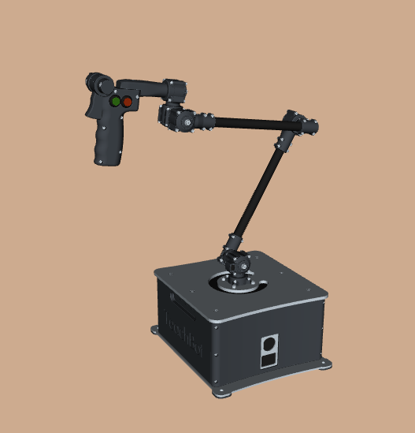

TOS-Teachbot
TeleOperation Services B.V.
Met de TOS-Teachbot kun je met een teleoperatie de joints van de UR robot bewegen.

Voorbereidingen
Instaleer de Techbot software vogends de handleiding van Teachbot
Native Teachbot ROS2 package
Starten van de UR-Robot
Je kunt de teleoperatie op de robot zowel in simulatie als met een fysieke(Realworld) UR robot uitvoeren
Start de robot:
ros2 launch my_ur_bringup real_robot.launch.py
Start de movegroup:
ros2 launch my_ur_bringup movegroup.launch.py
Start de simualtie:
ros2 launch my_ur_bringup simulatreal_robotion.launch.py
Er wordt de Gazebo simulatie omgeving voor een UR5 robot geopend en een RVIZ monitor. Vanuit de RVIZ monitor kun je door middel van de real_robot movegroup de robot laten bewegen naar voor ingestelde posities.
Starten van de TOS-Teachbot
Ook de Teachbot kun ook in simulatie uitvoeren:
ros2 launch teachbot_ros teachbot_rviz.launch.py target_config_file:=~/teachbot_ws/src/teachbot_ros/teachbot_ros/config/target_robots/ur.yaml
Er zal een tweede RVIZ-monitor gestart worden met daarin een UR robot welke de stand van de Teachbot representeerd
ros2 launch teachbot_ros sim_teachbot_rviz.launch.py target_config_file:=~/teachbot_ws/src/teachbot_ros/teachbot_ros/config/target_robots/ur.yaml
Starten van de jointfollower
ros2 launch teachbot_follower follower_action.launch.py config_file:=~/teachbot_ws/src/teachbot_ros/teachbot_follower/config/ur.yaml
Nadat je de Teachbot hebt ge-enabled zal de robot de bewegingen van de Teachbot in real-time volgen en uitvoeren.
Teachbot met LeRobot
Je kunt ook de LeRobot software gebruiken om de Teachbot te bedienen. Volg hiervoor de handleiding van LeRobot